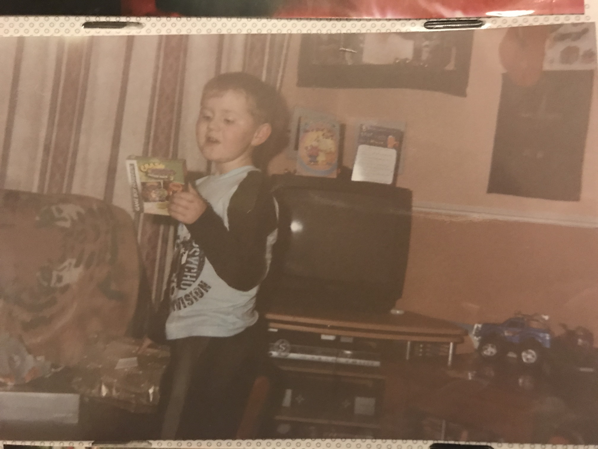
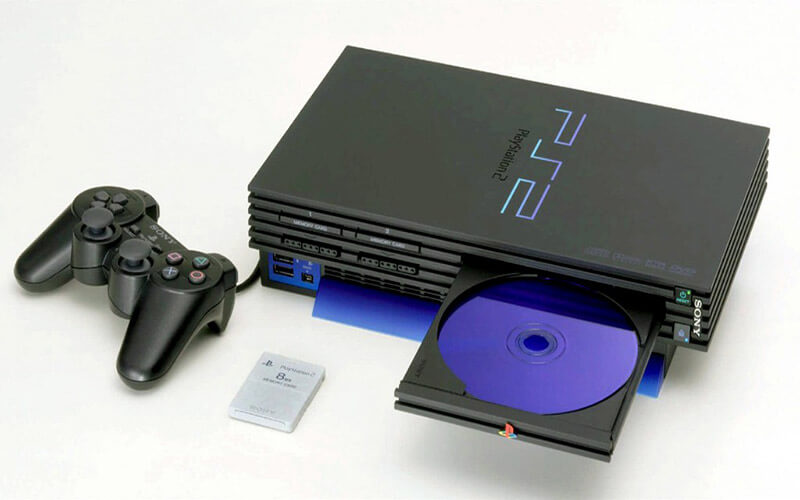
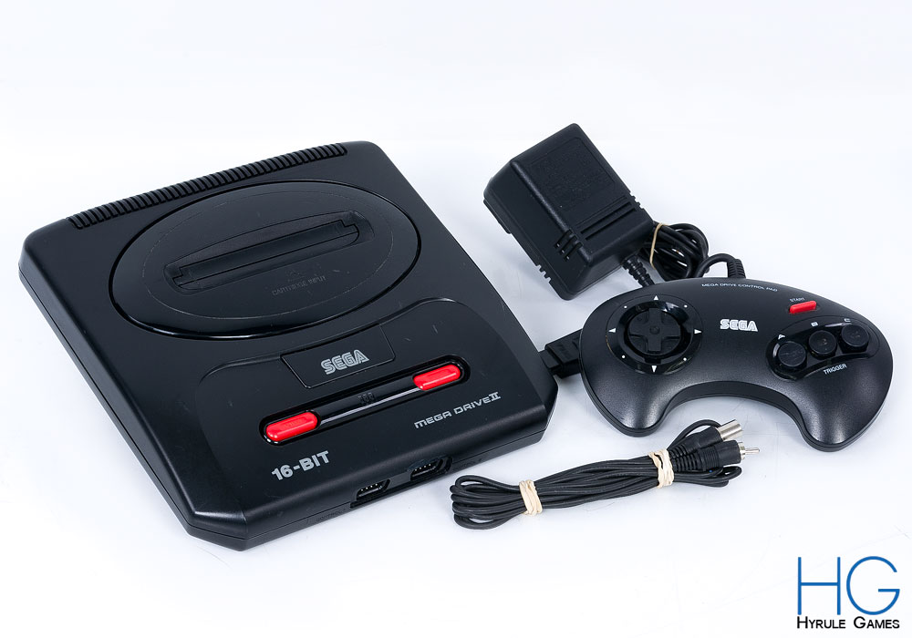
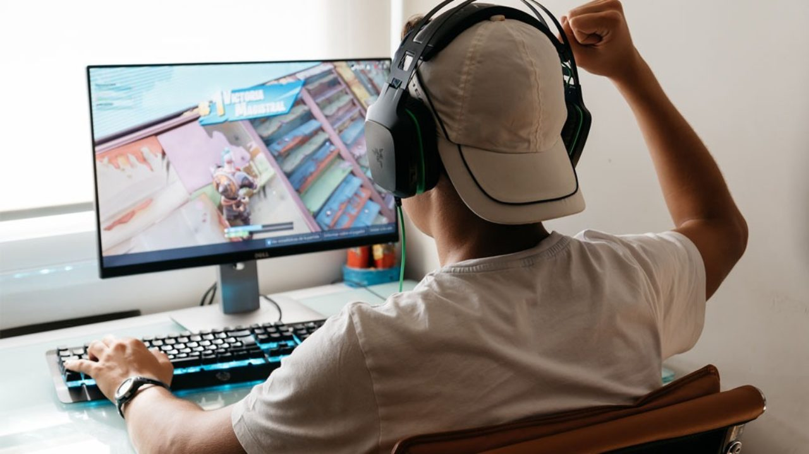
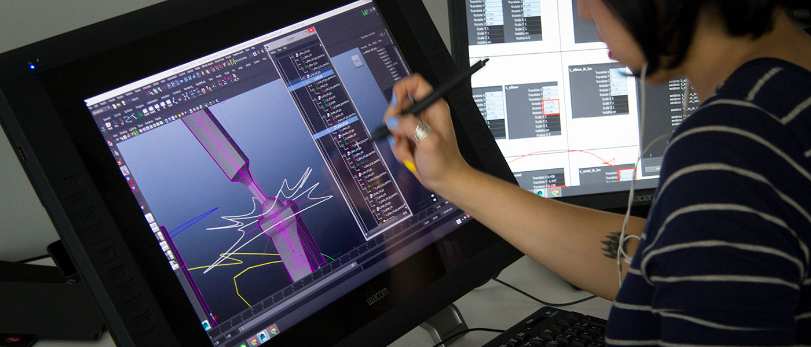
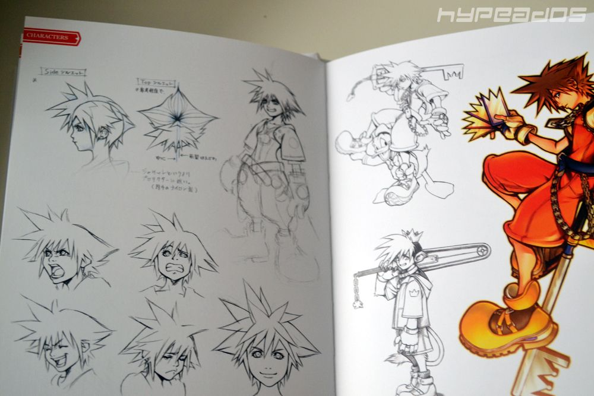
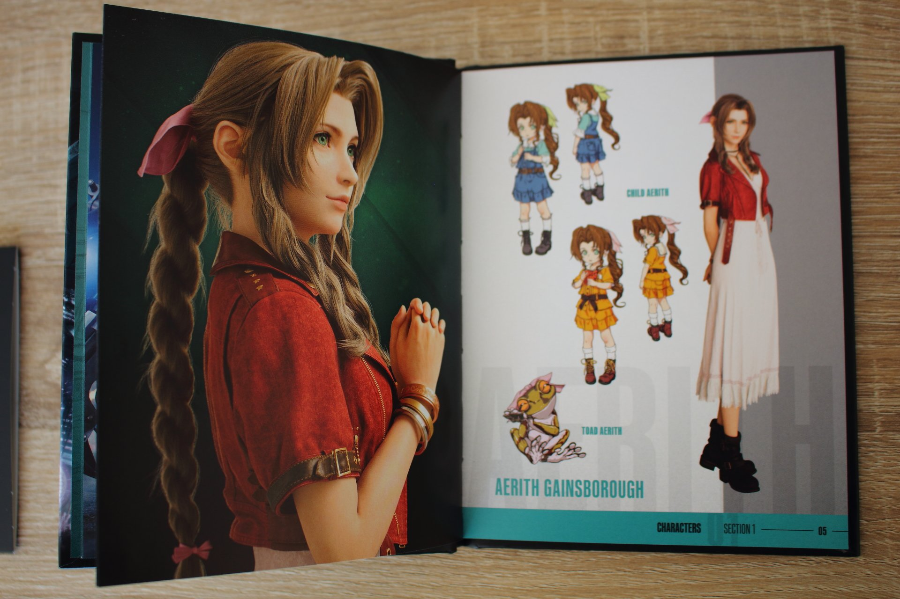

One of my earlist memories as a child was playing my first gaming device called the GameBoy Advance. The game I was playing was called Sonic Advance 3. To best describe it,
it had a colourful artstyle that drew me in along with the great music and short levels to play through to keep my young attention.
To compare to watching a tv show, me the player got to
control a character on screen which blew my mind back. My brothers handed me down their gaming consoles such as the Playstation 2 and
Sega Mega Drive. To this day I still play video games.
Playstation 2 and Playstation 5
Nintendo Switch
GameBoy Advance
Xbox 360
Sega Mega Drive

Holding My First GameBoy Game

Playstation 2 Console

Mega Drive Console
As an adult, gaming is still my favourite hobby. With technology getting more bigger and faster, I get to play and immerse myself into beautiful worlds built on the lastest hardware and software. It is now more convient to
download a game on my Playstation 5 then buying the actual disc, saving space and the need to travel to a game store. I wouldn't have meet any of my friends if it wasn't for gaming.
Playing online games with friends
is a lot of fun and is so much better to socialise then the outside world. I am only joking. Learning how games are made is interesting because of the amount time and resources it takes to make a game. I
like to collect art books of favourite games to see what the game director cut out from the offical release.

A Man Winning A Game

Developing A Game Model

Kingdom Hearts Art Book

Final Fantasy Art Book
Final Fantasy VII Remake
Kingdom Hearts III
Persona 5
Dragon Quest XI
Undertale
If I had to choose one of my favourite video games of all time it would have to be Undertale. It was developed by only one person named Toby Fox and the game's story was 6 hours long. However it has such an
enriching world to explore, filled with interesting characters. Which a few I found quite relatable to me. The graphics was 2-D sprites but was beautiful in its own unique way. The gameplay lets you decide,
Fight or Mercy which basically means you can kill the enemy or be passive.
When I first choose to be passive on my first enemey, my main character became friends with the so called enemy which was
not what I was expected at all. The soundtrack is amazing especially when the piano kicks in, giving me goosebumps. I would suggest to listen to the track Hopes and Dreams,
it is my favourite piece of music ever made.
“Undertale” Creator Toby Fox on the Indie Computer Game that’s Become an Industry Darling
Toby Fox was twenty-three when he launched the Kickstarter campaign for Undertale with a modest goal of $5,000.
The computer game, which would be almost entirely built, developed, and scored by Fox himself, had a relatively simple
premise — a child falls through a hole in a cave and arrives in a fantastical underground world...